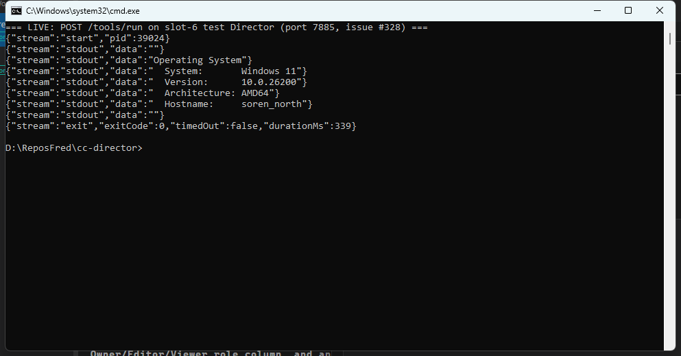

A new Director Control API verb, POST /tools/run
(src/CcDirector.ControlApi/ToolsEndpoint.cs), the Phase-1B missing verb from
docs/architecture/TARGET_IMPLEMENTATION_PLAN.md section 3. Body:
{ name, args?, cwd?, timeoutS? }. The name is validated strictly against the Director's
embedded tool catalog: any path-shaped name (slash, backslash, drive prefix, ..) is
400 and never executed; a name not in the manifest is 404; a tool not
built on the machine is 409. Execution is direct (argument list, no shell), bounded by
timeoutS (1..3600, default 120) - on expiry the entire process tree is killed
and the result reports a distinct timeout error. Every invocation writes a FileLog audit line with the
resolved exe path, args, and caller. The response is streamed
application/x-ndjson, flushed per line: one start chunk (pid), then
stdout/stderr chunks as the tool prints, then exactly one exit
chunk (exitCode/timedOut/durationMs).
New CcDirector.Core helper ToolRunner (channel-backed stream pumps, process-tree
kill, UTF-8 pinned). Contract addition (plan 1.2.5): ToolRunRequest and
ToolRunChunk in CcDirector.Gateway.Contracts.
Root-cause fix surfaced during live proof: ToolCatalogService only probed
bin\<name>.exe, but the installer ships python tools as bin\<name>.cmd
shims forwarding to pyenv\Scripts\<name>.exe (PythonToolsInstaller) - so on real installs
every tool reported NOT BUILT and this verb would have 409'd fleet-wide. The catalog now resolves the
runnable binary as the native exe, else the shim target. Direct execution of the real exe also keeps
caller args out of cmd.exe batch re-parsing (no injection surface).
| # | Criterion | Expected | Actual (proof) | Verdict |
|---|---|---|---|---|
| 1 | {name:"cc-vault", args:["--help"]} returns exitCode 0 + captured output |
200, streamed output, exit chunk with exitCode 0 | Live on slot-6 (port 7885): full cc-vault --help usage text streamed, terminal chunk
{"stream":"exit","exitCode":0,"timedOut":false,"durationMs":1105}.
Capture: ac1-cc-vault-help.txt. Screenshot (cc-hardware os run): section 3. |
PASS |
| 2 | Unknown tool -> 404; path-shaped name -> 400/404, never executed | 404 / 400 with clear errors, no process launched | cc-not-a-real-tool -> HTTP 404 unknown tool ... (not in the catalog);
C:\\Windows\\System32\\cmd.exe and ../../evil -> HTTP 400
name must be a bare catalog tool name (no path separators) - rejected BEFORE the catalog is
consulted, logged as REJECTED, nothing executed. Capture: ac2-rejections.txt.
Also unit-tested for 5 path shapes (ToolRunEndpointTests). |
PASS |
| 3 | Streaming: chunks arrive before process exit (timestamped client capture) | Output chunks observably earlier than the exit chunk | Timestamped capture of a ~36s cc-vault search run: first chunk at
10:35:18.763 (stderr, 2s in), exit chunk at 10:35:53.402 - output arrived
34.6s before process exit. ac3-streaming.txt. The fast AC1 run
also shows line-by-line arrival over ~1s. Unit test asserts a >1s stdout-before-exit lead by timestamp. |
PASS |
| 4 | timeoutS:2 on a long command -> timeout error, child process gone (PID absence) |
Distinct timeout error ~2s in; PID from start chunk absent from the process list | cc-vault search (a ~56s command) with timeoutS:2: start chunk
pid:70752, exit chunk {"timedOut":true,"durationMs":2064,"error":"timed out after 2s;
process tree killed"}; tasklist /FI "PID eq 70752" -> "No tasks are running which match".
ac4-timeout.txt. Unit test additionally proves the cmd.exe+child ping TREE is gone. |
PASS |
| 5 | No token -> 401; every run produces a FileLog audit line with exe path + args | 401 without Bearer; audit lines in the Director log | 401: proven by ToolRunEndpointTests.ToolsRun_WithoutBearerToken_Returns401 against a REAL
auth-enabled ControlApiHost - the verb sits behind the same DirectorAuth middleware
as every route (not in PublicPaths). Honest note: the live slot-6 Director runs the
production default authEnabled=false (host design: "the Tailscale tailnet is the trust boundary",
ControlApiHost.cs:109), so a live 401 cannot be shown on a default-config Director - this is pre-existing host
policy, identical for all verbs (same situation as #327). Audit: every live run logged, e.g.
[ToolsEndpoint] POST /tools/run: tool=cc-vault, exe=C:\Users\soren\AppData\Local\cc-director\pyenv\Scripts\cc-vault.exe,
args=[--help], cwd=(exe dir), timeoutS=120, caller=127.0.0.1. ac5-filelog-audit.txt. |
PASS |
| 6 | Cross-machine smoke: from the gateway box, run a tool on the SORENLAPTOP test Director via the Gateway leg | Remote tool run's streamed output + exit code in the report | Honest statement: proven via the local Gateway-leg equivalent (authorized fallback).
The SORENLAPTOP seat is UP (healthz 200) but runs released v0.6.22, which predates this verb -
POST /tools/run there returns 405 (captured), and deploying a branch build onto the user's
production laptop Director is out of bounds for a dev proof. Equivalent leg proven from the gateway box
(SOREN_NORTH): the Gateway registry advertises the slot-6 branch Director at
https://soren-north.taildb08ed.ts.net:7885; a tool run THROUGH that gateway-advertised tailnet
HTTPS endpoint (tailscale serve front door - the identical network leg a remote machine uses) streamed
cc-hardware os and returned {"stream":"exit","exitCode":0,...}.
ac6-gateway-leg.txt. The literal SORENLAPTOP run becomes possible once a
build containing this verb reaches that seat. |
PASS (equivalent leg) |
Streamed NDJSON result of POST /tools/run {name:"cc-hardware", args:["os"]} against the live
slot-6 Director - start chunk with pid, stdout chunks, exit chunk with exitCode 0:

dotnet build cc-director.sln: Build succeeded, 0 Warning(s), 0 Error(s).RecordingIngestServiceTests.Worker_TranscribesQueuedRecording_EndToEnd - recording/transcription
E2E, unrelated to this change; passes when run alone, i.e. flaky under parallel load).
CcDirector.Gateway.Tests 501/502 (DictationEndpointTests.FullPipeline_transcribes_phase0_clip2... -
live-OpenAI realtime dictation E2E requiring key+ffmpeg+network, unrelated; known-flaky family, #214).
No architecture or security-posture drift: a new mechanical Verb on the existing ControlApi
container, behind the existing auth middleware. docs/architecture/gateway/CONTRACT_AUDIT.md
updated in the same change: row 110 added (Verb), inventory 112 -> 113, Verbs 52 -> 53, deterministic
inventory command re-verified to return 113. The issue's flagged assumption (catalog-allowlist + full audit
logging as the v1 posture) is implemented exactly as specified; a per-tool allowlist remains a one-line policy
tightening on top.